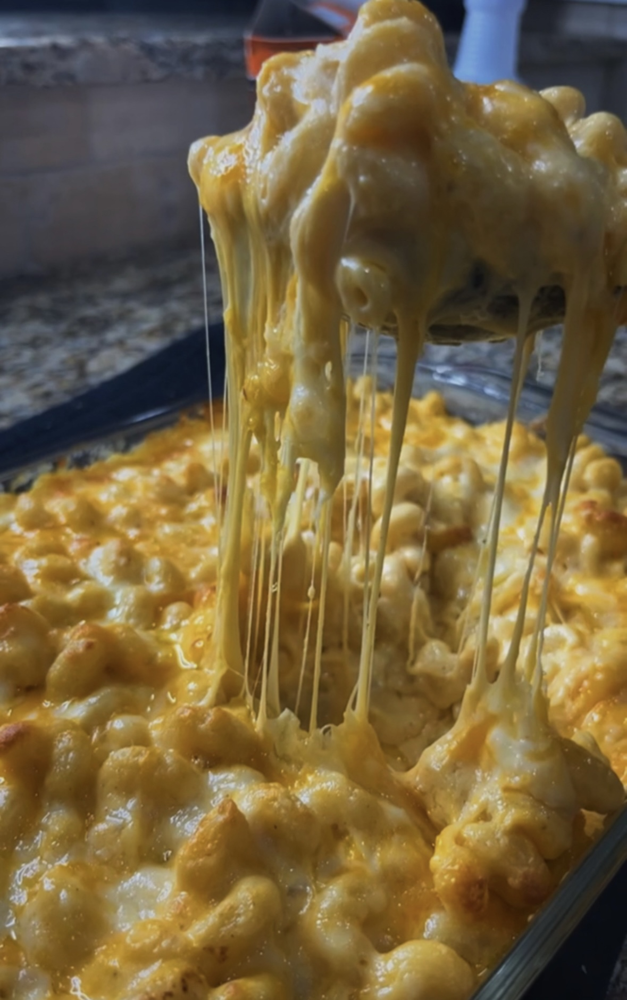

@tinekeyounger's The Best Mac N Cheese

Tineke, an aspiring chef and one of my favorite content creators on TikTok
proves that mac and cheese is not as daunting as it seems. With a simple recipe that flavor packs a punch,
she ensures us that anyone can take on this holiday classic.
Ingredients
- 1 lb cooked Elbow Pasta
- 8oz Mild Cheddar
- 1 lb Colby Jack
- 1 lb Mozzarella
- 1 pint Heavy Cream
- 12 ox Evaporated Milk
- 3 tbsp Butter
- 3 tbsp All-Purpose Flour
- 1/2 tsp Salt
- 1/2 tsp Pepper
- 1 tsp Garlic Powder
- Paprika
- 1 tsp Ground Mustard
- 1 tsp Old Bay Seasoning
Instructions
- Shred your three cheeses yourself, do not use pre-shredded cheese.
- In a pot melt the butter, then add the flour and mix all together. Mix for 2-3 minutes on medium heat, making sure the flour is cooked.
- Slowly add the heavy cream, whisking and incorporating it. The sauce will start thickening as you whisk. Once thickened, add in the evaporated milk whisking until thickened again
- Once the sauce has thickened, add al yo9ur seasonings and stir until incorporated. Add half of your shredded cheeses slowly, one at a time and mixing before adding the next cheese. Mix the cheese in until fully melted.
- Add your cooked pasta to the cheese sauce, incorporate the pasta and cheese sauce together. Once incorporated in a baking dish add half of the pasta, then layer with half of your remaining cheese. Add the remaining pasta and then add the remaining cheeses.
- Place in oven for 25-30 minutes or until all the cheese on top is melted. Serve and enjoy!